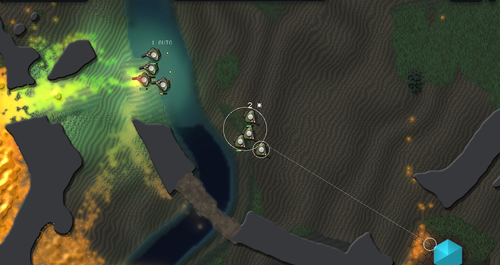
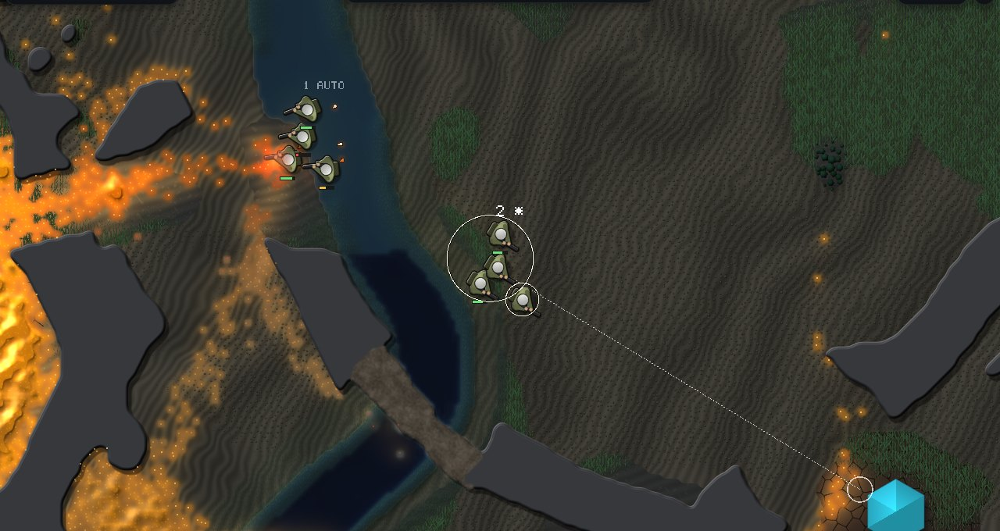
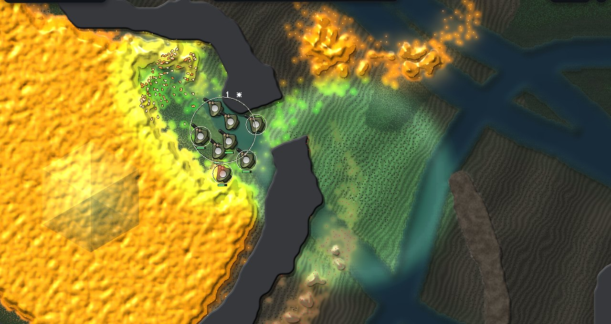
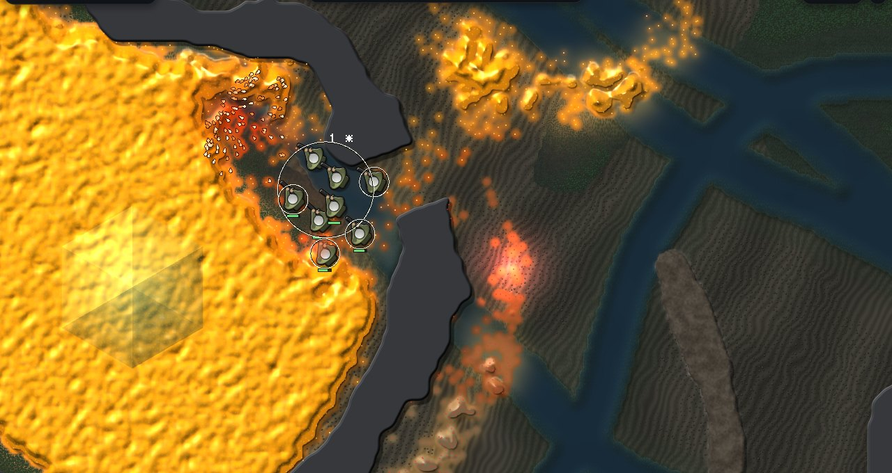

<title>Flinch Look</title>
<meta name="claude:viewport-fit-sides" content="cover">
<link rel="stylesheet" href="https://fonts.googleapis.com/css2?family=Bricolage+Grotesque:opsz,wght@12..96,600;12..96,750&family=Source+Sans+3:wght@400;600&family=JetBrains+Mono:wght@400&display=swap">
<style>
/* Layout: one reading column; each zoom is a pair, before on the left and after on the right (stacked on a phone), counts under each clip */
:root{
  --bg:#f3f2ec; --panel:#e8e6dc; --fg:#1d211c; --muted:#5b6157;
  --accent:#b0702a; --soft:#f1e3cf; --line:#cfccbf;
  --display:"Bricolage Grotesque", "Segoe UI", system-ui, sans-serif;
  --body:"Source Sans 3", "Segoe UI", system-ui, sans-serif;
  --mono:"JetBrains Mono", ui-monospace, Consolas, monospace;
}
@media (prefers-color-scheme: dark){:root:not([data-theme="light"]){
  --bg:#16140f; --panel:#221f18; --fg:#ebe7dd; --muted:#a39d8e;
  --accent:#e0a35a; --soft:#33291b; --line:#3a3428; color-scheme:dark}}
:root[data-theme="dark"]{
  --bg:#16140f; --panel:#221f18; --fg:#ebe7dd; --muted:#a39d8e;
  --accent:#e0a35a; --soft:#33291b; --line:#3a3428; color-scheme:dark}
body{background:var(--bg);color:var(--fg);font:17px/1.55 var(--body);margin:0;
  padding-left:max(16px,env(safe-area-inset-left,0px));padding-right:max(16px,env(safe-area-inset-right,0px));padding-block:28px 64px}
main{max-width:1180px;margin:0 auto;display:flex;flex-direction:column;gap:30px}
h1,h2,h3{font-family:var(--display);text-wrap:balance;line-height:1.15;margin:0}
h1{font-size:2.3rem;font-weight:750}
h2{font-size:1.45rem;font-weight:750;border-top:2px solid var(--accent);padding-top:14px}
h3{font-size:1.08rem;font-weight:600}
p{margin:0}
section{display:flex;flex-direction:column;gap:14px}
.lede{color:var(--muted);font-size:1.02rem;max-width:760px}
.eyebrow{font:12px/1 var(--mono);letter-spacing:.08em;text-transform:uppercase;color:var(--accent)}
.prose{max-width:760px;display:flex;flex-direction:column;gap:12px}
code{font:0.86em var(--mono);background:var(--panel);padding:1px 4px;border-radius:3px}
.grid{display:grid;grid-template-columns:repeat(2,minmax(0,1fr));gap:16px}
@media (max-width:720px){.grid{grid-template-columns:minmax(0,1fr)}}
figure{margin:0;display:flex;flex-direction:column;gap:6px;min-width:0}
figure video,figure img.still{width:100%;height:auto;display:block;border-radius:6px;border:1px solid var(--line);background:#000}
figcaption{display:flex;align-items:baseline;gap:10px;flex-wrap:wrap;font-size:.92rem;color:var(--muted)}
.side{font:750 1.1rem/1 var(--display);color:var(--fg);min-width:3.4em}
.counts{font:13px/1.4 var(--mono);color:var(--fg);font-variant-numeric:tabular-nums}
.game{font:13px/1.4 var(--mono);color:var(--muted);font-variant-numeric:tabular-nums}
.note{background:var(--soft);border-radius:8px;padding:16px 18px;max-width:760px;display:flex;flex-direction:column;gap:8px}
ul{margin:0;padding-left:1.2em;display:flex;flex-direction:column;gap:8px;max-width:760px}
footer{font-size:.85rem;color:var(--muted);max-width:760px}
</style>
<main>
<header style="display:flex;flex-direction:column;gap:10px">
  <span class="eyebrow">Larder World · Look A, the fight round the squad · 2026-11-17</span>
  <h1>The slime flushes where your shots land</h1>
  <p class="lede">Every shot lays an alarm that the slime backs away from. The game drew that alarm as green light over the ground and the slime alike, so the middle of every firefight turned lime, and it was the largest thing on screen where you aim. Now the alarm shows only on the slime it acts on, as a warm flush in the slime's own colour. Bare ground shows nothing. The fight itself is the same: each pair below is one game, walker for walker.</p>
</header>

<section>
  <h2>Zoom 6, the camera on the squad</h2>
  <p class="prose">Run seed 1, planet 1, eight soldiers firing as the slime arrives, 14.5 to 20.5 s at the game's own pace.</p>
  <div class="grid">
    <figure><video src="img/before-z6.mp4" poster="img/before-z6.jpg" autoplay muted loop playsinline aria-label="Before, zoom 6: the fight under a lime wash"></video><figcaption><span class="side">Before</span><span class="counts">4.7% of the picture green · 0.04% hot</span></figcaption></figure>
    <figure><video src="img/after-z6.mp4" poster="img/after-z6.jpg" autoplay muted loop playsinline aria-label="After, zoom 6: the slime flushes orange where shots land"></video><figcaption><span class="side">After</span><span class="counts">0.4% of the picture green · 0.64% hot</span></figcaption></figure>
  </div>
  <p class="game">Both sides, 15 s to 20 s: shots 38 to 103 · slime killed 414 to 1,782 · walkers 12,859 to 11,493 · soldiers 8</p>
</section>

<section>
  <h2>Zoom 12, the camera held on the fight</h2>
  <p class="prose">The same game a second later, 15.5 to 21.5 s, twice as close.</p>
  <div class="grid">
    <figure><video src="img/before-z12.mp4" poster="img/before-z12.jpg" autoplay muted loop playsinline aria-label="Before, zoom 12: green over ground and slime"></video><figcaption><span class="side">Before</span><span class="counts">19.3% of the picture green · 0.04% hot</span></figcaption></figure>
    <figure><video src="img/after-z12.mp4" poster="img/after-z12.jpg" autoplay muted loop playsinline aria-label="After, zoom 12: the flush stays on the slime"></video><figcaption><span class="side">After</span><span class="counts">0.9% of the picture green · 2.98% hot</span></figcaption></figure>
  </div>
  <p class="game">Both sides, 16 s to 21 s: shots 47 to 119 · slime killed 647 to 1,969 · walkers 12,531 to 11,348 · soldiers 8</p>
  <p class="prose">Green is the share of the picture clearly greener than it is red or blue, averaged over the clip. Hot is the share where red is at least 1.9 times green: the flush on thin slime and the ember where a shot lands.</p>
</section>

<section>
  <h2>The Swarmer's planet, where the alarm lingers</h2>
  <p class="prose">On planet 4 the alarm is the Swarmer's own: it lasts longer and pulls the slime toward the wound. This is the planet whose mint wash got the old haze turned down on 11-15. Two stills of the same second, 40 s into run seed 1, so judge the motion in the clips above and the reach of the colour here.</p>
  <div class="grid">
    <figure><figcaption><span class="side">Before</span><span class="counts">12.8% of the picture green · 0.00% hot</span></figcaption></figure>
    <figure><figcaption><span class="side">After</span><span class="counts">2.0% of the picture green · 0.65% hot</span></figcaption></figure>
  </div>
  <p class="game">Both sides at 40 s: shots 401 · slime killed 4,328 · walkers 50,376 · soldiers 8. The green left is the planet's own moss.</p>
</section>

<section>
  <h2>A flare on bare ground</h2>
  <p class="prose">A Flare bullet burns for 3 s and alarms the slime round it. Its only sign used to be the green haze, which reached much further than anything it did. With the haze gone it would have shown nothing on bare ground, so a burning flare is now an ember with a red light round it for as long as it burns. Stills at 18 s, two seconds into the burn.</p>
  <div class="grid">
    <figure><figcaption><span class="side">Before</span><span class="counts">15.9% of the picture green · 0.04% hot</span></figcaption></figure>
    <figure><figcaption><span class="side">After</span><span class="counts">0.3% of the picture green · 1.23% hot</span></figcaption></figure>
  </div>
  <p class="game">Both sides at 19 s: shots 95 · slime killed 1,602 · walkers 11,765 · soldiers 8. A siren's call shows the same way: by its red lamp and the slime it reaches.</p>
</section>

<section>
  <h2>What to look for</h2>
  <ul>
    <li><strong>The flush is the alarm.</strong> It is deepest where shots are landing now and fades as the alarm does, so it marks the slime that is about to give ground. One shot takes the slime about halfway to full flush.</li>
    <li><strong>The ground stays dark.</strong> The river, the soil and the rock round the squad keep their own colours through the whole fight, so the slime's edge and your soldiers read against them.</li>
    <li><strong>The ember where a shot lands is unchanged</strong> and is still the hottest thing in the fight. Mini-bosses and set slime keep their own colours under the alarm.</li>
    <li><strong>Two other looks were filmed and not kept.</strong> Turning the alarmed slime pale washed out the front line just where you need to see it. Darkening it read as dirty or starving slime, which already means something else.</li>
  </ul>
  <div class="note">
    <h3>In the game</h3>
    <p>It is on in every game with nothing to switch: fire into the slime on any planet, or fire a Flare near slime. The old haze strength setting is gone, since there is no haze left to set. If the flush reads too strong or too red in play, it is two numbers to change.</p>
  </div>
</section>

<footer>Filmed on the software renderer, so the timing of your PC's frames is not in these clips. There the frame costs the same as before, within the 10% that two runs of one build differ by. Still to come in the fight's look: shots as short bright streaks, flung droplets drawn as slime, and a big squad you can count. Source and numbers: <code>Reports/flinch-look-2026-11-17/</code> in the repo.</footer>
</main>
